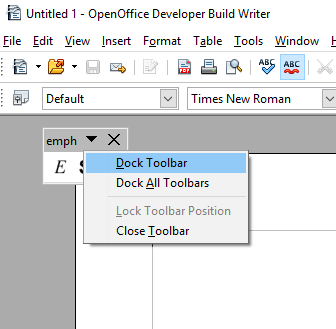
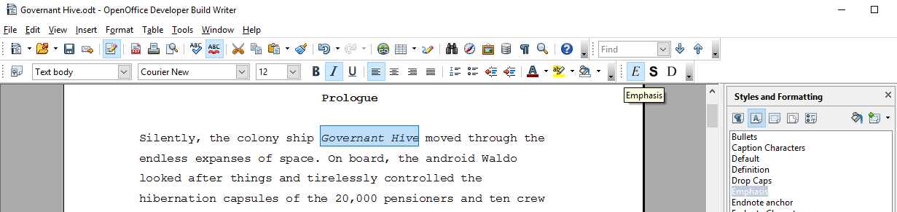
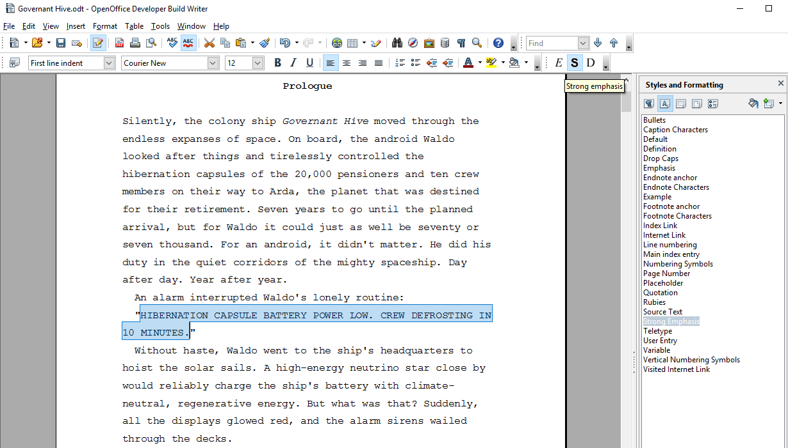
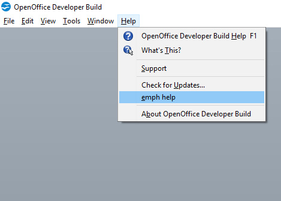

emph Help
Project homepage
Instructions for use
After installing the extension and restarting the office application, you will see a small toolbar.

You can dock it to a suitable place on the user interface.

There are three buttons: E for emphasize and S for strong emphasize and D for default style.
Assign “Emphasis” character style
- Mark the text passage you want to emphasize.
- Click on the E button.

Assign “Strong Emphasis” character style
- Mark the text passage you want to emphasize.
- Click on the S button.

Undo the assignment
- Mark the text passage you want to de-emphasize.
- Click on the D button.
Enter emphasized text
- Make sure that nothing is marked.
- Click on the E button.
- Type the text you want to emphasize.
- When finished, click on the D button.
Enter strongly emphasized text
- Make sure that nothing is marked.
- Click on the S button.
- Type the text you want to emphasize.
- When finished, click on the D button.
Get help
In the Help section of the main menu, there is a emph help submenu.
